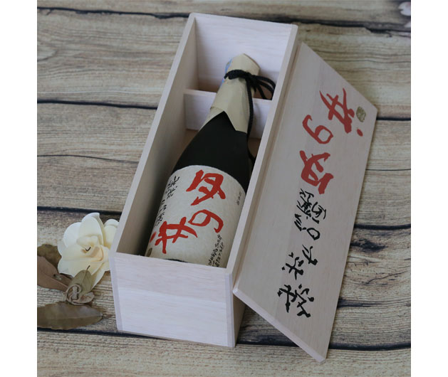

Sake Junmai Daiginjo 720ml

Mô tả:Được làm hoàn toàn bằng phương pháp thủ công. Gạo chỉ được thu hoạch vào tháng giêng, được mài 45%,
tạo nên độ đậm của hương vị, mang một cảm giác thu hút người uống bằng vị thơm, đậm, nồng
Độ cồn:15,5%
Giá : Liên Hệ
<<quay lại